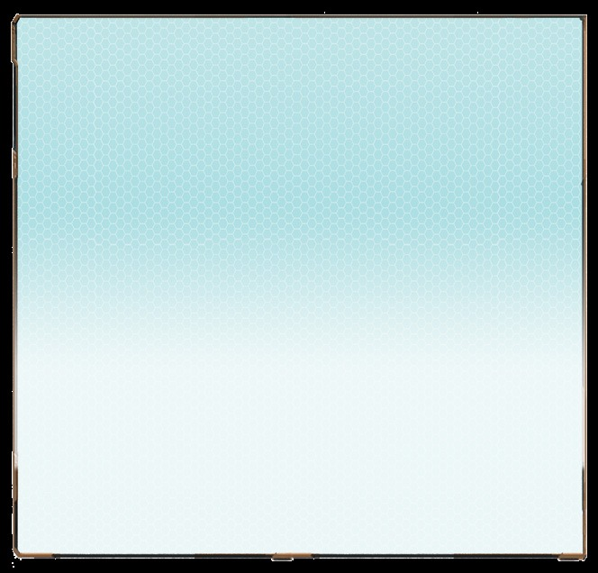
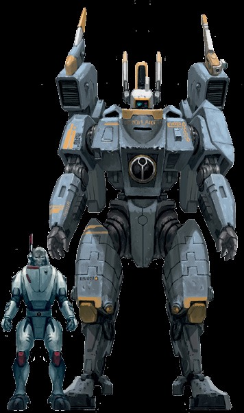
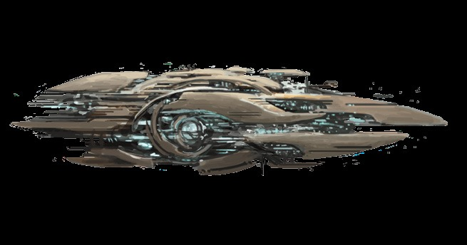

令人敬畏的X8危机战斗服的另一个变体，X805“强执”型危机战斗服比许多其他版本更大、更雄伟。它受到众多指挥官的青睐，其独特的设计更能够让盟友和敌人都能迅速识别出其驾驶员是一名值得敬畏和尊重的战士。
护甲点数：11全身挂点：4
体型：大型
力量：60
主要系统：黑阳滤镜、增强型动力系统、环境密封装置、喷气背包、多重追踪器
推荐挂载：融合炮或等离子步枪或循环离子炮、脉冲速射炮或火焰喷射器、目标锁定器、护盾发生器或矢量喷射推进器
稀有度：独一无二
X8危机战斗服极为罕见的变体，802“铱星”危机战斗服被能够提供无与伦比的保护的原型铱合金包裹着。这些战斗服通常被授予特别有价值的领导人，以防止敌人的暗杀企图。
护甲点数：15全身
挂点：3
体型：大型
力量：55
主要系统：黑阳滤镜、增强型动力系统、环境密封装置、喷气背包、多重追踪器
推荐挂载：双联融合炮或双联等离子步枪、脉冲速射炮或火焰喷射器、护盾发生器或兴奋剂注射器
稀有度：独一无二


